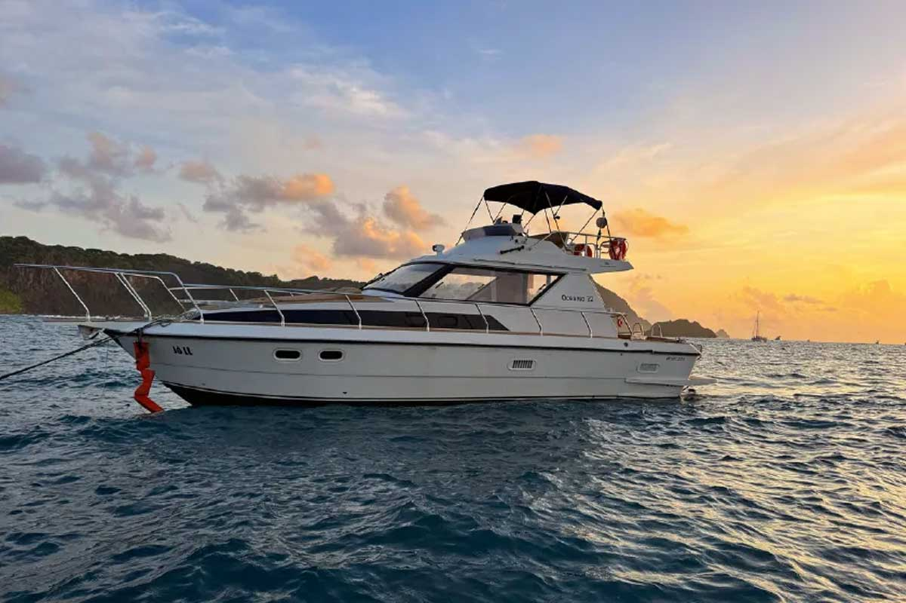

Lancha Jô LL

Mergulhe nas melhores experiências
@noronhalocal
Passeio privativo • Mar de Dentro
A Lancha Jô LL é a escolha ideal para quem busca privacidade e conforto absoluto. Com atendimento personalizado, navegamos pelas águas cristalinas do Mar de Dentro, garantindo uma experiência única nas praias mais famosas de Noronha.
Roteiro do passeio
Saída do Porto de Santo Antônio
Início da navegação pelo Mar de Dentro, passando pelas praias da região.
Baía do Sancho
Parada para banho em uma das praias mais famosas do mundo, dentro do Parque Nacional Marinho.
Observação de golfinhos
Durante o trajeto, é comum avistar golfinhos acompanhando a embarcação.
Banho e flutuação
Momentos para nadar ao redor do barco e contemplar a vida marinha.
Duração
O passeio tem duração média de 4 horas.
Valores
Os valores são sob consulta e variam conforme data e disponibilidade.
Informações importantes
- ⚠️ Passeio sujeito às condições climáticas.
- ⚠️ Ingresso do Parque Nacional é obrigatório.
- ⚠️ Permitido levar bebidas alcoólicas.